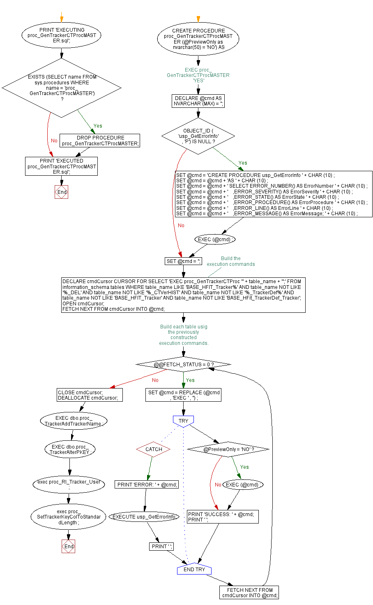

<a href="proc_GenTrackerCTProcMASTER.png"></a>
GO PRINT 'EXECUTING proc_GenTrackerCTProcMASTER.sql'; GO IF EXISTS (SELECT name FROM sys.procedures WHERE name = 'proc_GenTrackerCTProcMASTER') BEGIN DROP PROCEDURE proc_GenTrackerCTProcMASTER; END; GO -- EXEC proc_GenTrackerCTProcMASTER 'YES' CREATE PROCEDURE proc_GenTrackerCTProcMASTER (@PreviewOnly as nvarchar(50) = 'NO') AS BEGIN DECLARE @cmd AS NVARCHAR (MAX) = ''; IF OBJECT_ID ( 'usp_GetErrorInfo' , 'P') IS NULL BEGIN SET @cmd = 'CREATE PROCEDURE usp_GetErrorInfo ' + CHAR (10) ; SET @cmd = @cmd + 'AS ' + CHAR (10) ; SET @cmd = @cmd + ' SELECT ERROR_NUMBER() AS ErrorNumber ' + CHAR (10) ; SET @cmd = @cmd + ' ,ERROR_SEVERITY() AS ErrorSeverity ' + CHAR (10) ; SET @cmd = @cmd + ' ,ERROR_STATE() AS ErrorState ' + CHAR (10) ; SET @cmd = @cmd + ' ,ERROR_PROCEDURE() AS ErrorProcedure ' + CHAR (10) ; SET @cmd = @cmd + ' ,ERROR_LINE() AS ErrorLine ' + CHAR (10) ; SET @cmd = @cmd + ' ,ERROR_MESSAGE() AS ErrorMessage; ' + CHAR (10) ; EXEC (@cmd) ; END; SET @cmd = ''; --Build the execution commands DECLARE cmdCursor CURSOR FOR SELECT 'EXEC proc_GenTrackerCTProc ''' + table_name + ''';' FROM information_schema.tables WHERE table_name LIKE 'BASE_HFIT_Tracker%' AND table_name NOT LIKE '%_DEL' AND table_name NOT LIKE '%_CTVerHIST' AND table_name NOT LIKE '%_TrackerDef%' AND table_name NOT LIKE 'BASE_HFIT_Tracker' AND table_name NOT LIKE 'BASE_HFit_TrackerDef_Tracker'; OPEN cmdCursor; FETCH NEXT FROM cmdCursor INTO @cmd; --Build each table usig the previously constructed execution commands. WHILE @@FETCH_STATUS = 0 BEGIN SET @cmd = REPLACE (@cmd , 'EXEC ' , '') ; BEGIN TRY if @PreviewOnly = 'NO' EXEC (@cmd) ; PRINT 'SUCCESS: ' + @cmd; PRINT ' '; END TRY BEGIN CATCH PRINT 'ERROR: ' + @cmd; EXECUTE usp_GetErrorInfo; PRINT ' '; END CATCH; FETCH NEXT FROM cmdCursor INTO @cmd; END; CLOSE cmdCursor; DEALLOCATE cmdCursor; EXEC dbo.proc_TrackerAddTrackerName ; EXEC dbo.proc_TrackerAlterPKEY ; exec proc_RI_Tracker_User ; exec proc_SetTrackerKeyColToStandardLength ; END; GO PRINT 'EXECUTED proc_GenTrackerCTProcMASTER.sql'; GO
Hide code
Visustin flow chart for T-SQL